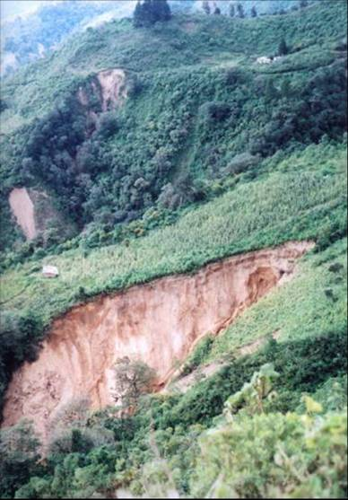
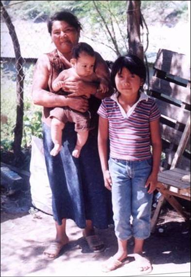
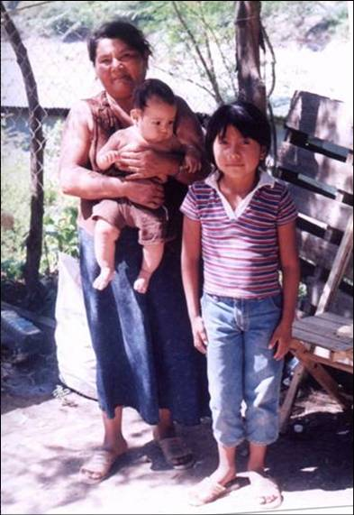

|
|
|
THE IMPACT OF HURRICANE STAN IN CHIAPAS
Helping people cope so they can rebuild their lives
|
|
The Sexto Sol Center promotes an ethic of “community
action,” whereby community members work together to solve common problems and reach shared goals.
|
SEXTO SOL CONTINUES TO HELP SURVIVORS REBUILD
HURRICANE STAN ravaged Central America on October 4, 2005. Hundreds of communities in the Sierra Madre and Coast of Chiapas were devastated. Cornfields, land cultivated in coffee, homes and entire communities were lost as landslides raged down steep slopes in every corner of the Sierra. The massive losses and terrible fright left emotional and psychological damage that complicates survivors' ability to rebuild their lives.

Children in front of their school, August, 2006
Helping people recover from massive disaster is a long term commitment. After a year of emergency work to assist survivors, Sexto Sol began collaborating as consultants for a group of 1000 families to design and build a sustainable Eco-village where they will create a new life after the disaster in an intentional environmentally sound community.
We thank Helio Medical Supplies for a generous donation of acupuncture needles in 2007 to allow us to continue work to alleviate survivors' emotional trauma. Hundreds have been treated for Post Traumatic Stress.
See below for more information.
See Sexto Sol's Response for details and photos.
Through this work we let the people of the Sierra Madre know
they are not forgotten as they rebuild.
THE WORST DISASTER IN THE HISTORY OF CHIAPAS
|
|
Overview followed by government statistics
The ecological and human disaster that began Oct 4 and impacted a major portion of Central America was mostly unreported by the U.S. Media. Six states in Mexico sustained damage and Guatemala saw much loss of life. Honduras, Nicaragua and El Salvador are affected also. People in Central America have not recovered from Hurricane Mitch that caused so much destruction in 1998 so this new tragedy on such a massive scale comes as a devastating blow.
In the Sierra Madre, massive deforestation over decades is responsible for the failure of the watershed to withstand the heavy rains. Thousands of coffee farmers and corn farmers have lost their land in landslides that stripped slopes down to bare rock. People do not know how they will make a living in the future.


Photos: Damage to a cornfield, see house at left center for scale. Cousins stand on 10 feet of mud deposited on their house.
Facts as reported by the Governor of Chiapas, Pablo Salazar Mediguchia to the state legislature on November 11, 2005.
Damage in Chiapas: The principal regions affected were the Sierra Madre and the Coast. In four days, the equivalent of 2 years average rainfall fell on a region that was already saturated beyond capacity by Hurricane Rita at the end of September. In the coastal city of Pijijiapan, in 24 hours 457 mm of rain fell, nearly half a meter! The total rainfall is estimated to be 800% more than fell in the devastating hurricanes in 1998.
Beginning on October 4, the first of four days of incessant rain, massive flooding and landslides started all over, providing no escape routes. Ninety-eight rivers flooded at extreme levels. The marines saved 20,000 people from the rivers and ocean. Thirteen neighborhoods in the large city of Tapachula were washed to sea. Forty-one municipalities, most located in remote parts of the mountains, are affected.
Thousands of landslides throughout the region caused the destruction of 630 roads totaling 5587 kilometers or a full one-quarter of the entire amount of roads in the state. Two hundred fifty three bridges were damaged. Thirty-one of the 41 municipalities affected were cut off from the outside making it necessary to airlift food, water and medicine and evacuate any injured or ill by helicopter. Some communities had still not received any support three weeks after the disaster began due to the logistical difficulties of terrain, bad weather and the sheer volume of relief aid needed throughout the region. Three weeks after the disaster began, injured people were still coming into the hospital in Motozintla, many carried in stretchers over extreme terrain from remote communities.
Tapachula had already evacuated 15,000 people during Hurricane Rita that made 40 bridges impassable and affected 62 communities. These people had returned to their homes by the time Stan began but had to flee to refuges again just days later. The total of people in refuges reached over 150,000 with an estimated 92,000 who continue in refuges in mid-November having lost a home to return to. Thousands more who have lost homes are living with neighbors and relatives.
An average of over 1500 tons of food is moved daily to feed the disposed. (Note: Food has come from Mexican government, businesses, Latin American countries, Germany and from average Mexicans who continue to understand that the people in Chiapas will need support for many months still to come. We have not heard of aid coming from the United States on news broadcasts. The U.S. Embassy web page has no mention of this tragedy on its web page though Ambassador Garcia sent his condolences on that site to the people in Cancun and the region affected by Hurricane Wilma.
Reconstruction work began as soon as the rains stopped. Heavy machinery has been working for weeks to clear roads of massive landslides. Riverbeds will need to be excavated to remove what in some places is as much as 45 feet of rock and fallen trees. Boulders the size of houses fill some riverbeds in the high country.
One hundred eleven schools were totally destroyed and another 191 damaged. Damage in mountain communities in some places is so complete that no one can safely return to live there even though these are places that have been inhabited for generations. It is estimated that over 122,000 rural small-scale farmers have lost their crops and in many cases their land has washed away or fallen into the gorges. There will have to massive relocation of more than 8199 households.
Our comments:
Rather than letting the numerous disasters in our world discourage you, instead - become part of the solution. There IS much you can do. Choose a place to start and begin. All pro-active responses contribute to the healing that is needed for our planet and for human relations. There is no time to waste.
See below for information on the Hurricane Stan Emergency Fund and other ways you can help.
Back to overview menu
|
SEXTO SOL'S RESPONSE
|
| |
In the year after the disaster, Sexto Sol worked to meet immediate needs for food and shelter, to address the psychological suffering and trauma of survivors, and to provide techincal knowledge to help communities rebuild in a sustainable manner. Please see details below.
BACKGROUND: Hurricane Stan caused incomprehensible level of damage to people's physical world, destroying homes, towns, work places, cropland, schools, roads and marking beloved mountainsides with the terrible scars from landslides and flooding. At the same time, the experience has damaged people's inner world as well, leaving wounds and trauma that very well may mark their lives forever.
 


Photos: Antonio "shoveling" with a spoon after watching his Dad shovel mud for a week. A family living by the side of the road. What is left of the community 23 de Abril, population about 500.
The psychological and emotional suffering is widespread and debilitating for many survivors. Thousands now suffer from Post Traumatic Stress Disorder (PTSD), the well-known human response to overwhelming and terrifying experiences. PTSD interferes with a person's ability to reestablish a sense of security. The frightening symptoms - such as nightmares, loss of concentration, flashbacks, moments of overwhelming fear and sadness - in themselves cause more stress for the person who is struggling to cope with traumatic memories.
Survivors of Hurricane Stan have many practical things to deal with that require them to draw on personal strength. As 2006 begins, people are living without shelter in the Sierra and facing the loss of their coffee crops to landslides when they should be harvesting. For these people, the stressful situations have not ended. Instead, each day is another stressful experience that is compounded into the whole ordeal. Everywhere one goes, people have a great need to tell what happened to them.
Sexto Sol is responding to these psychological and spiritual needs in the following ways.
Due to the generous support of early contributors to Sexto Sol's Hurricane Emergency Fund, we were able to bring the Acupuncturist International Relief Workers to Motozintla in February. This experienced team of medical professionals respond to massive disasters by training local medical personnel to treat PTSD.
UPDATE - March 19, 2006
The hurricane of 2006 has indelibly marked the lives of everyone who lives in the affected part of Central America. Six months after the catastrophe, in Chiapas, daily life is still a matter of survival for hundreds living deep in the Sierra Madre where the river and landslides swallowed up their previous lives. Entire communities were totally obliterated in a matter of hours in October, leaving traumatized people to scrape out a place to survive and provide some structure for their children.
It is times like these when the response of people far away makes all the difference for people struggling to keep their spirits up as they deal with such massive change in their lives.
We are pleased to tell you about two recent projects that have brought relief to people while also communicating some of the loving kindness of people far away who are concerned for the welfare of survivors of Hurricane Stan.
Addressing Post Traumatic Stress in the affected population.
Sexto Sol, as a small organization, does not have the resources to help people rebuild their communities. We do, however, have experience in helping people deal with PTSD and the awareness that addressing the psychological and emotional suffering of survivors is an important part of recovery that is often left un-addressed by relief efforts. In order to help people have the energy to cope with rebuilding their lives, Sexto Sol has been focusing on helping them pick up the pieces of their shattered faith in the world and to find the inner resources to continue on.
Stan - PTSD Response Project: 50 health local health practitioners trained
Thanks to the generous and timely support of Sexto Sol supporters, and the compassionate involvement of the Acupuncture International Relief Workers (AIRW), there are now 50 doctors, nurses, indigenous doctors, and health promoters now trained to provide treatment for PTSD.
The AIRW was formed by Dr. Maria Dolores Diaz in 1998 to respond to the humanitarian crisis that resulted from Hurricane Mitch in her native Honduras. This February, Sexto Sol brought members of AIRW with experience responding to natural disasters to provide two intense training sessions for medical personnel at the Instituto Mexicano de Seguro Social Hospital in Motozintla. During the public clinic, teachers and trainees treated about 400 people with a 5-point auricular acupuncture therapy that is specifically indicated for alleviating PTSD. This included a public clinic in the park in the center of a town an hour from Motozintla where damage from Stan was especially severe. Over 80 people sat in plastic chairs next in the park, next to the jail and the highway, with their eyes closed as the needles did their work to relieve them of some of the trauma that has invaded their thoughts, robbed them of sleep and played tricks on their minds since the 4th of October. It was a very moving thing to see. People have told us since that they note a significant difference as a result of the treatment.
We are eternally grateful to Maria Dolores Diaz, Ph.D., Lic. A., Della Estrada, Lic. A., Russell Klobas, Lic. A., and Susan Pistawka, Lic. A. for their solidarity with the people of Chiapas affected by Stan.


With an estimate of at least 150,000 affected in Chiapas alone, that original training and treatment is only the beginning. Sexto Sol is heading the follow-up to encourage people trained to take this treatment into affected communities. With 8 people trained, the hospital in Motozintla will provide treatment to the population they serve. Miriam Stein, Sexto Sol intern, and Tamara Brennan, Executive Director, treated 10 people in the hurricane refugee camp above the ruins of what was the community of 23 de Abril. Two members of the Organización de Medicos Indígenas de la Sierra have already treated over 30 people in Chico Muselo and surrounding communities in the mountains. With a new list serve to help trainees keep in touch, we are monitoring how this work ripples out into the population.
In August Tamara traveled with intern Diane Lees to an impacted community to treat 25 adults and 26 children. We receive reports from those trained who work in far communities that people are experiencing relief from this treatment.
Funds are needed to purchase supplies and provide logistical support to those trained so that people in remote areas can benefit.
Psychological services - Sexto Sol's Executive Director, Tamara Brennan, is a psychologist with experience assisting war refugees from Guatemala. She has provided individual, family and group counseling to survivors. She will be providing group therapy to survivors in Motozintla. Dr. Brennan has been asked to facilitate the work of a group of psychologists who are providing training in group work to people from remote affected communities. Sexto Sol is developing plans to attend to the needs of children of a community living in a camp above the ruins of their town deep in the Sierra.
Long term rebuilding
With the help of international volunteers with training in Permaculture design we are compling information to help communities plan reconstruction that will be sustainable - reduce pollution, increase quailty of life, protect the natural world. With your help, we can bring in building supplies to help them set up latrines and water systems, and build a temporary school to ease the difficulties they now face.
Meeting emergency needs for food and warmth


Volunteer Tony Campbell obtained high quality seeds from Johnny's Seed, Seeds of Change, the Organic Seed Alliance and the World Seed Fund in the U.S. In August we delivered packets of seeds to families in the most affected community so they can produce food in the coming months. Standing on the river bed in the site where their community was swallowed by the river, we provided techincal information on how to create food gardens.
The Mad Hatters of North America make 149 hand made hats to keep children warm inside and out.
In December we put out an invitation to people who crochet and knit to make hats for the children of a community was totally destroyed in the flood. Over 40 people in Canada, the U.S. and three in Motozintla made over 140 hats! The idea is to help to ease some of the fright that these little people endured by giving them something made with love just for them. Each child received a toothbrush and a photo of the "madrina" who made their hat.
Our hat makers ranged in age from 13 to 93. Return addresses were from Tucson to Toronto.
On March 10th, we delivered these gifts to the children of 23 de Abril thanks to the support of the Comisión de Caminos, Highway Department which generously provided a driver to take us over the devastated landscape to the remote community.
As we drove away from the encampment and its temporary tent school, a little girl about 10 years old ran out of her makeshift home to wave, pointing to her pretty pink and white hat, sent with love from somewhere else on our continent. It was an image to remember always. To all the people who made hats -- HOORAY FRIENDS - WE DID IT! See Children section for photos.
In August we delivered hats to another community covering the heads of 30 children, one newborn, and 7 elders.
Pychological support to communities affected - group work to help leaders prepare to help themselves and others.
At the invitation of a group of concerned psychologists from San Cristobal, Dr. Tamara Brennan has participated in sessions in two communities with leaders from 6 communities. Work aimed to help them cope with losses and fear and to learn strategies to help others do the same. She has also provided training on PTSD and its consequences to health professionals, to the community of Motozintla through radio and newspaper and to affected communities as part of Sexto Sol's effort to support emotional healing.
|
|
Back
to overview menu |
MIRACLES DO HAPPEN
|
| |
Sun, 04 Dec 2005
Tamara Brennan, Executive Director of The Sexto Sol Center
Hurricane Stan: Yesterday was a good day
Dear Friends:
I wanted to share this personal experience with you since I know you
are concerned about the communities in the Sierra of Chiapas. As you know, for people in the Sierra Madre and coast of Chiapas,
Hurricane Stan changed the world forever. It is hard to comprehend catastrophe and to know where one fits into the whole picture. You do what comes up in your road. I wanted to share my recent experience with you.
A couple of weeks ago, the helicopters stopped flying supplies to
remote communities. I realized that the drone had become a source
of relief since it meant that at least some supplies were getting to people whom we knew are suffering hunger. When we checked with our friend who had been heading up the distribution warehouse we learned that they had run out of food and other supplies to send out to the communities that are unreachable by road. Then our Mayor was on national television saying that 41 communities were still inaccessible and had not been receiving adequate supplies to insure their survival. This meant that with 2 months already since the
disaster began, it was possible that people would be starving.
That's when I really got insomnia. I kept trying to work it out in
my mind if it was worth hiking with the dog for 7 hours with only 50
lbs of beans on my back for a couple of hundred people.
Here's where the story gets good... I had gone to Mexico City to
pick up a large contribution of books for schools the third week of
the diaster (how we measure time now). I had been staying with my family who insisted that I go with them to Tepoztlan, a favorite spot for tourists and people from Mexico City. At that point I was dealing with a lot of sadness, having worked with people who have lost family members or had survived serious life-threatening situations.
Among the booths and restaurants I happened to see a sign at a
church announcing the collection spot for food and clothes
for Chiapas. I met the man who had organized the effort called "Hermano a Hermano" (from Brother to Brother) and asked him to keep Sexto Sol in mind if there was any way we could help coordinate the delivery of things in the Sierra where the need is really great.
Late Thursday night we got a call from four guys from Hermano a Hermano who had just arrived in Motozintla with a full semi-truck! We were not expecting them at all so it was a leap of faith on their part to come all that way. We rushed to meet them and set to work to figure out the logistics. This was one of those cases where everything fell into place. We found a warehouse at that late hour, got a commitment of two dump trucks to deliver the supplies deep into the mountains, gas paid for, and figured out which communities to
deliver to. All was set.
Yesterday I accompanied these really wonderful men on the trip to
deliver the supplies to two of the most remote and most affected
communities. "Terrifying" is the best way to describe the road we
took through the devastataion. There were moments when I was asking
God for more time on this Earth. Fortunately, it seems that my request was heard.
I need some distance to be able to describe the destruction but let me
say that the magnitude of the damage to the Sierra is
incomprehensible. The town of about 100 homes, three schools, two
churches, and one paved main street was wiped away in the flood. In
its place is some 80 feet of pure rock since even the dirt that came
down in the hundreds of landslides was stripped away by the
floodwaters. I walked the river bed with a little girl who showed
me a cement slab that she thought had been her house.
The people are now living under plastic in the trees on a hill above
this mess. They had no bedding, toilets or even buckets to carry
water. They had suffered hunger and much anquish and fear. When
the fellows began unloading the tools, blankets, food, medicine,
clothes - the people were thrilled. It was a very wonderful
experience. They had been feeling forgotten though were grateful
that a tractor was finally working to open the road. (It took us 4 hours to get there over an extremely dangerous and heart stopping track through countless landslide.)
I had the chance to talk with them about the importance of now
working together, of forgetting old grievances, of loving each other,
that each child was a child of everyone, and of the importance of
being there for each other because everyone was suffering.
This was a great moment too. It is really not hard to love people
and to help them, as you know. Just speak about what is important.
I will be going back there, walking in, with my dog, but this time I
will take a sleeping bag, seeds for food gardens, a notebook to work out ideas on how to rebuild the new community in a sustainable way, and to write a proposal together for a grant for building a new water system. "We will be waiting for you, Doctora", they said. This was a great day. I slept very well last night.
Things work out in the most amazing ways.
Tamara
Back to overview menu
EXTEND YOUR CARE TO PEOPLE IN NEED
|
| |
Solidarity in times of crisis is one of the highest expressions of compassion.
Help Sexto Sol to help hurricane survivors rebuild their lives
Let them know they are not forgotton.
Give to the Hurricane Stan Emergency Fund
|
Something to think about:
Human suffering anywhere is of importance to all. The balance sheet of the world shows that those who live in places that take more than their share have played a role in bringing our planet to point of needing to cleanse itself.
Instead of becoming frightened by the scale of the disasters, consider how you can be part of the movement to end unsustainable consumption of the natural world. This includes seeing the value of the lives of people whose lifeways have less impact. It means seeing the importance of aligning with indigenous peoples who oppose the extraction of resources on their lands.
Back
to overview menu
|
|
|
|